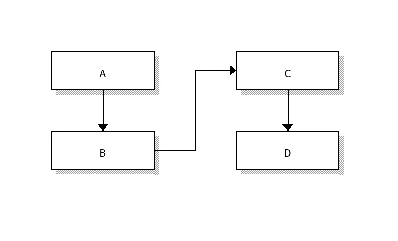
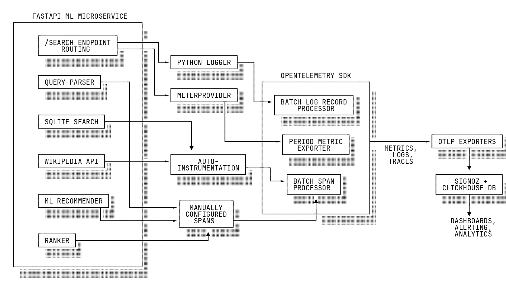

Roni Kobrosly Ph.D.'s Website
written by Roni Kobrosly on 2026-01-09 | tags: engineering open source agentic ai
Okay, I decided to take that free-floating ASCII diagram code and make it into a proper open-source python package. I present to you “RetroFlow”. On the surface it seems silly, but there are a lot of advantages to using ASCII flowcharts, particularly in this age of agentic AI...
Read on... (238 words, approximately 2 minutes reading time)written by Roni Kobrosly on 2026-01-05 | tags: engineering open source
I forget how it started but recently I've been enjoying making these cool retro-ish, ASCII flow diagrams for my personal projects. They look like something you'd find in a dusty cabinet of early NASA documents. Code linked in post...
Read on... (100 words, approximately 1 minute reading time)written by Roni Kobrosly on 2026-01-04 | tags: generative ai engineering career data
It's been about a year since I launched Data Compass AI, and it's collected over 3,000 survey responses from organizations spanning finance, retail, and more. For various reasons I'm planning on winding down this experiment. I wanted to give it a proper goodbye and take a moment to share what the data tells us. It also gave me a chance to try out some agent-generated (and human-verified) analytics.
Read on... (2306 words, approximately 12 minutes reading time)written by Roni Kobrosly on 2025-12-21 | tags: observability engineering open source machine learning
Over the last few years I've been working within a large SRE org and I've really come to deeply appreciate observability in the software engineering world. I'm a data science / machine learning / AI engineer, and sadly AI/ML observability feels like a niche topic. I figured it was time to put proverbial pen to paper, and write up some of what I've learned. This is the first installment of a three-part post on observability, OpenTelemetry (Otel), and ML microservices. Part 1 focuses on an examples of Otel to a classic ML microservice, Part 2 is using Otel trace data to perform automated root cause analysis, and Part 3 will focus on observability for large language models (LLMs)...
Read on... (2076 words, approximately 11 minutes reading time)written by Roni Kobrosly on 2025-06-16 | tags: agentic ai engineering
The wonderful terminal integration and easy MCP configuring of Claude Code has gotten me really excited. I would even say it fully restored my joy for development that I had a decade ago! I've been playing with it for a couple of months and think I finally have a claude.md file that maintains the quality of the AI's work between sessions.